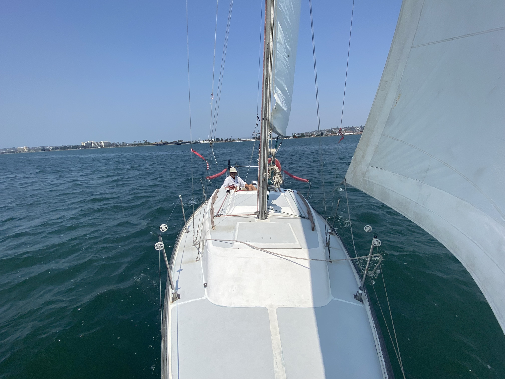

I secured a slip in Chula Vista, where Pokey will stay.
Winds were out of the West/Northwest at 10-15 knots
In total the journey took about 2 hours and 45 minutes. We averaged 3.9kts. Docking is still a challenge - especially with wind. The wind picked up substantially once we got past the Coronado bridge into the south bay.
Happy to have a permanent berth for Pokey - let the boat projects commence!